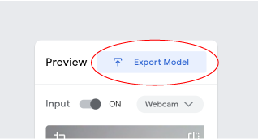
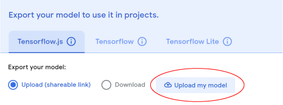
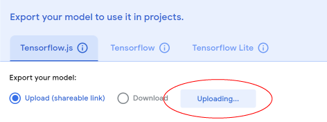
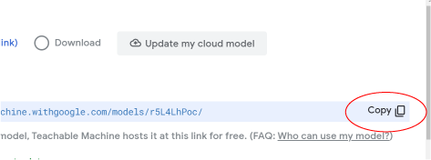

Give your micro:bit project AI superpowers! This site will allow
your micro:bit to use your computer's webcam to recognize images.
You can recognize facial expressions, poses, and any object you can
think of to put in front of your webcam! What will your micro:bit do
when it can tell if you're smiling, or if you've deposited the right
amount of coins?
Use the links below to get your Teachable Machine image
recognition model and your micro:bit starter code. Then click on the
third button to connect everything together!!
Select the Microbit in the popup screen. Psst, it might be called mbed Serial Port.
Google Teachable Machine AI Model website
No experience required! This free website will let you use your
webcam to teach an AI to recognize images, or poses. You choose a
name for each "Class" of images you want it to recognize and pass
along to your micro:bit. Export your model when you're done, and
copy the link it gives you.
You can also train the AI to use your microphone to recognize
sounds.
New to Google Teachable Machine? Follow these guidelines to learn more: Guide to Teachable Machine
Starter micro:bit code
This simple program for your micro:bit will let it receive
information from the AI on what it sees or hears
You decide what the micro:bit does when it recognizes each "Class".
Play a tune, make a happy face, move a motor. It's up to you!
New to Microbit Makecode? Follow these guidelines to learn more: Microbit Makecode Website
‘Make: AI Robots’ is also a book!
Create 8 projects that will teach cardboard construction, electronics, coding and AI with a micro:bit microcontroller. Sign up for the steamlabs mail list and be notified when the book is released and for other online activities we develop.
Pre order now!
Developed by:
Steamlabs
Thank you to our supporters on this project!
Amazon Future Engineer
Maker Media
micro:bit LIVE 2021 Presentation
We had the pleasure of presenting this web platform at the micro:bit LIVE 2021 conference to showcase the projects we have developed with our friends at Strawbees in Sweden and the Teknisk Museum in Norway!
Visit the Teachable Machine to train an AI project:
New to Google Teachable Machine? Follow these guidelines to learn more: Guide to Teachable Machine
1. Click “Export Model”
2. Click “Upload My Model”
3. Wait a moment
4. Click “Copy” to copy your link and paste it in the space above
Paste your Google Teachable machine model link here:
This is a Recognition Project - where the AI will be able to identify the classes you made based on the input you give it!
Nothing is happening to my micro:bit!
If you haven’t coded anything onto your micro:bit yet, well...nothing will happen. Visit the makecode website to make your own projects, or follow some tutorials, and then use this project to have the website talk to your micro:bit. Insert your code into the marked areas and download your code. Your micro:bit should now be springing to life with whatever fantastic projects you’ve made.
3. Here is a record of all the actions your AI has done. You can use this Log to troubleshot and explore!
Interact and your logs will show up here!